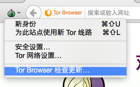
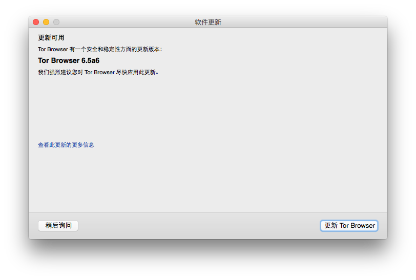
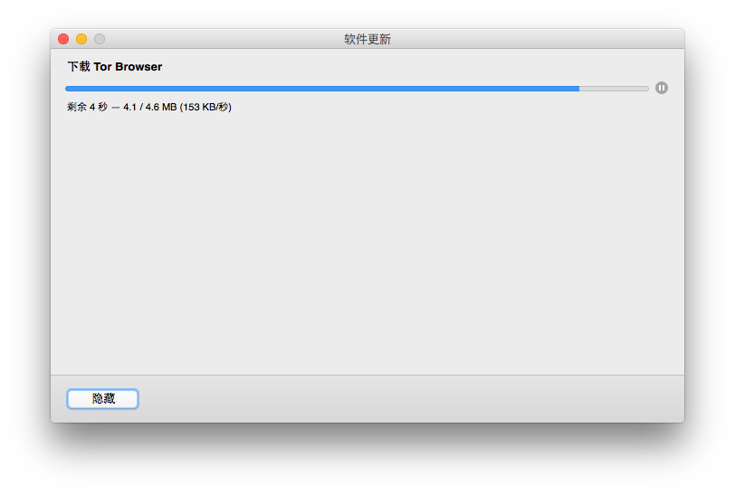

更新
Tor 浏览器必须要随时保持在最新版本状态，若您使用较旧版本的话，可能存在某些能够用来破坏您的隐私性或匿名性的安全性漏洞。
每当 Tor 浏览器有更新版被发布时，都会有提示自动出现：Torbutton 功能按钮会出现黄色三角形图标，且当您打开 Tor 浏览器时，也会以文本说明通知您，此时您可以手动或自动的方式来更新。
自动更新 Tor 浏览器
-

在您被提示应更新 Tor 浏览器时，点击 Torbutton 图标，然后选择“Tor Browser 检查更新”。
-

在 Tor 浏览器完成检查更新后，点击“更新”按钮。
-

等待更新自动下载和安装，然后重启 Tor 浏览器。然后您就运行有最新版本了。
手动更新 Tor 浏览器
在您被提示应更新 Tor 浏览器时，结束浏览并关闭程序。
删除其所在文件夹以删除您的系统上的 Tor 浏览器（操作细节见 卸载 章节）。
请到 https://www.torproject.org/projects/torbrowser.html.en 下载最新版的 Tor 浏览器，并用和之前一样的方式将它安装进系统中。